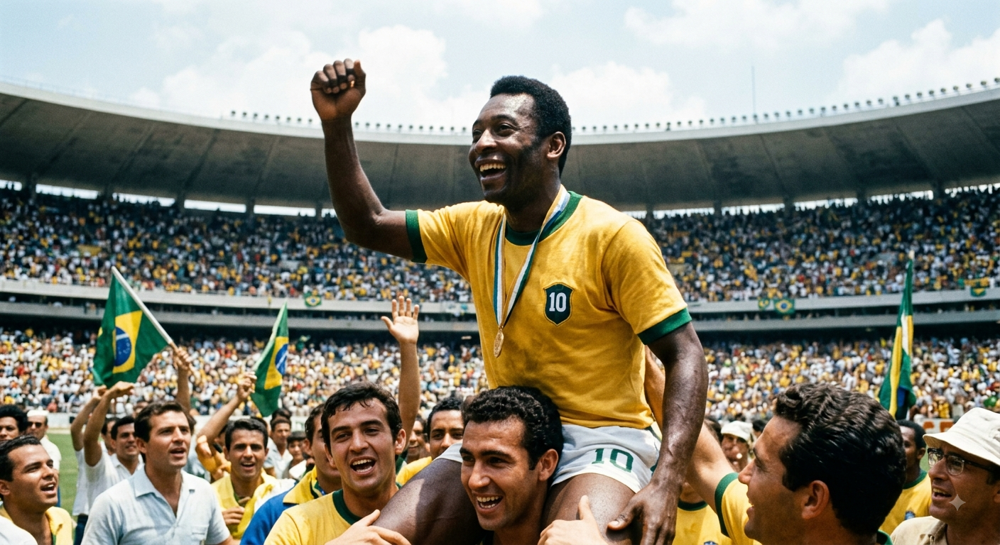

Meu primeiro post
Por: Miguel W. da Fonseca
Boas vindas ao meu novo blog! Aqui vou compatilhar as vezes que a seleção braileira ganhou em copas e qual foi os placares da final e os jogadores que macaram gols
Por: Miguel W. da Fonseca
Boas vindas ao meu novo blog! Aqui vou compatilhar as vezes que a seleção braileira ganhou em copas e qual foi os placares da final e os jogadores que macaram gols

Por: Miguel W. da Fonseca
🏆🏆 Os Títulos do Brasil, Placares e Marcadores 🇸🇪 1. Copa do Mundo de 1958 (Suécia) Final: Brasil 5 x 2 Suécia Gols do Brasil: * Vavá (2) Pelé (2) Mário Zagallo (1)
🇨🇱 2. Copa do Mundo de 1962 (Chile) Final: Brasil 3 x 1 Tchecoslováquia Gols do Brasil: * Amarildo (1) Zito (1) Vavá (1)
🇲🇽 3. Copa do Mundo de 1970 (México) Final: Brasil 4 x 1 Itália Gols do Brasil: * Pelé (1) Gérson (1) Jairzinho (1) Carlos Alberto Torres (1) 🇺🇸 4. Copa do Mundo de 1994 (Estados Unidos) Final: Brasil 0 x 0 Itália (Vitória do Brasil nos pênaltis por 3 x 2) Gols do Brasil no tempo regulamentar/prorrogação: Nenhum. 💡 Curiosidade: Essa foi a primeira final da história das Copas decidida nos pênaltis. Os cobradores brasileiros que converteram suas penalidades foram Romário, Branco e Dunga. 🇯🇵🇰🇷 5. Copa do Mundo de 2002 (Japão e Coreia do Sul) Final: Brasil 2 x 0 Alemanha Gols do Brasil: * Ronaldo Fenômeno (2)